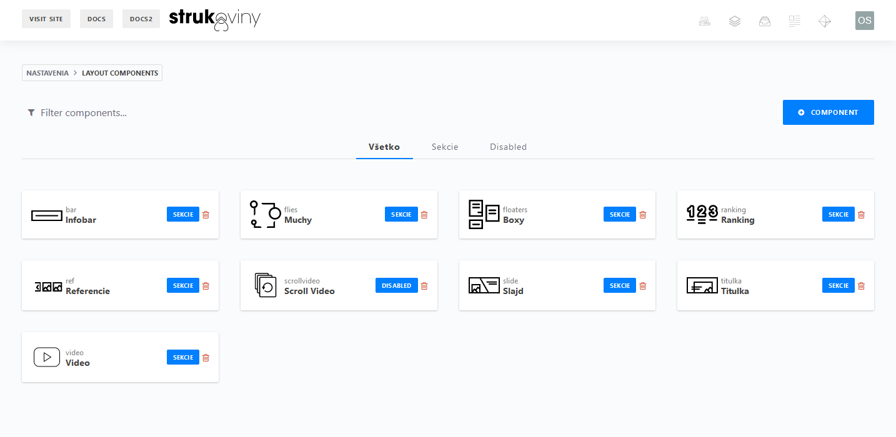

4. Vysvetlivky k Svelte súborom
Červené - Niektoré veci s ktorými niesom komplet spokojný.
Modré - Grafické prvky / komponenty / ...
Parts
Priamo importované do
App.sveltea nikde inde.
Keďže pravidlo nie je dostatočne dodržiavané, táto zložka bude možno reštrukturovaná. Taktiež sa v nej dosť mixujú grafické a negrafické prvky.
Head- Zmena <title> stránky, <meta> description a robotsHeader,Footer- Vždy na vrchu / spodku stránkyLayout- dostane objekt s rozložením stránky a ten porozkladá do jednotlivých komponentov z sectionsLoading- načítavanie, využívané v {#await} blokochModal- modálny iframe (náhrada lity aby sa nemusel importovať jQuery), využíva "writable() store", môže byť definovaný len raz, je zároveň importovaný v sekciách ako modul (mal by byť v inej zložke ako Parts lebo pravidlo) pre zmenu jeho obsahu a aktiváciu cez writableTheme- jednoduchá implementácia pre rýchlu zmenu témyLangSelector- implementovaný momentálne len v headeri = importovaný mimo App.svelteGlobalScripts- načíta externé skripty pomocou JSLoaderModule ktoré sú na stránke vždy dostupné (napr. nextSection)
Routes
Všetko, čo má dočinenia s navigáciou na pozadí (manažment slugu)
Router- Vytvorí eventListener na window pre všetky anchor elementy, spôsobuje vnútornú navigáciu namiesto refreshu ak anchor spĺňa podmienky (nedobre definované, napr. modal=true, okrem toho nevyužíva writable() store ale binding cez props, čo zabraňuje jednoduchému prístupu z akéhokoľvek Svelte komponentu)RouterModule- Funkcia pre spôsobenie vnútornej navigácie, importovaná okrem routera tam, kde treba vnútornú navigáciu mimo anchor elementov (teda na elementoch ktoré Router ignoruje). Je v separátnom súborePreview- cockpitcms live preview podpora. Cacheovanie využíva priblblý trik v App.svelteLanguageStore- Ukladá momentálny jazyk a podporované jazyky pre všetky komponenty ktoré to potrebujú (momentálne len App, Router, Nav, LangSelector, Header a Footer). Inicializácia podporovaných jazykov v App cez .setSupported
Scripts
Všetky súbory v tejto zložke sú skritpy kde len context="module", t.j. exportujú len funkcie a niesú grafické.
Slideshow- Slideshow v headeri pre motá, eventuelne z toho možno bude plnohodnotný separátny komponentYTurlToEmbed- Prekonvertuje YouTube URL do embed formátu, ak dostane ne-YouTube URL tak vráti prázdny stringLangDetectModule- Importované do App.svelte a Router.svelte, zistí aký jazyk používateľ preferuje podľa window.navigator.language(s), nastaví sa podla neho prvotný jazyk stránky cez Router.svelte.JSLoaderModule- Funkcia pre importovanie JS externých súborov on-the-fly s callbackom, momentálne len v GlobalScriptsisOffScreen- Detekcia či je prvok mimo obrazovky, používané pre animácie a auto-pauznutie videa (vVideo,Bar,Header,Titulka,Ranking)
Sections
Všetky hodnoty (tu sú v zátvorkách zjednodušene vypísané niektoré hlavné) by mali byť optional (WIP: tak aby používateľ nedokázal zabiť Svelte proces napr. ak {#each} náhodou dostane null)
Bar- Jednoduchý riadok
- (logo, text, nav)
Floaters- Lietajúce boxy, ľubovoľný počet, wrap
- (heading, subheading, text, corner text)
Ranking- Veľké čísla s malými podnadpismi vedľa seba, ľubovoľný počet, wrap
- (heading, span)
Ref- Autoscroll (pri malých rozlíšeniach) pre logá (= referencie)
- (logo array)
Slide- Komplexné riešenie pre dve plnohodnotné vysvetlenia vedľa seba
- (left/right: heading, text, nav, bg, bg color)
Titulka- Jasný nadpis v štýlovom prevedení, s prípadným textom a navigáciou
- Ľavé alebo centrované zobrazenie, špeciálna dvojitá vrstva pozadí
- (heading, text, nav, bg img, bg texture, bg color)
Video- YouTube alebo lokálne video
- Možnosti: Autoplay Loop/Controls a imerzívna štýlová iPhone téma
- (ytlink/src, options)
Bubbles- Slideshow "bubliny", resp. Recenzie
- Automatický slideshow, automatické pauznutie na mouseover, pokračovanie na mouseout, tlačítka pre posúvanie medzi slajdami
- (text array)
|  |
|---|
Sekcie nájdu svoje využitie ako komponenty v CockpitCMS z ktorých sa skladá celá stránka cez Layout.svelte |
CSS z-index index
Všetky prvky ktoré používajú z-index a jeho hodnota u nich, zoradené zostupne. Pre jednoduché zisťovanie čo je na akej úrovni.
- 1005 Modal (iframe) - lebo za iframe je pozadie s on:click close
- 1000 Modal (#modal) - modal (a teda aj pozadie na ňom)
- 999 Header (header) - fixovaný header vždy navrchu stránky
- 998 Header (nav) - navigácia v nav-wrapper (len na mobile)
- 997 Header (bg-close) - pre navigáciu v nav-wrapper (len na mobile)
- 250 App (section.fullscreen) - využívaný len v Loading, hodil by sa aj v modal
- 150 Flies (.overlay) - volne lietajúce grafické prvky s pointer-events:none;
- 99 Titulka (.content) - aby bol textový obsah nad .pic
- 99 Video (.immersive_screen:before) - iPhone overlay
- 10 Slide (.left) - clip-path
- 9, -1 Slide (.right) - aby bolo pozadie za clip-pathom vyššie
- 9 Floaters (.floaters) - neviem prečo tu je definovaný